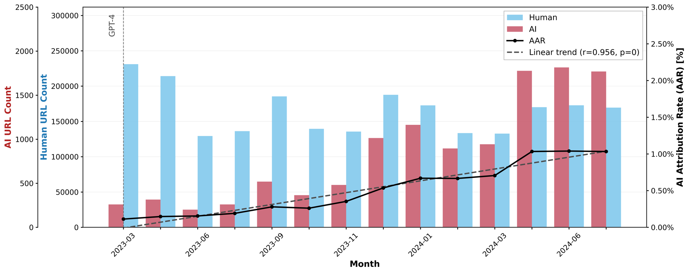

Can a transformer tell a genuine product review from SEO spam, and has generative AI changed what search engines show us?
I fine-tuned a hybrid DistilBERT model that fuses contextual embeddings with linguistic features, ran it as a two-stage cascade over 360,000+ web pages on an HPC cluster, and paired it with a fast TF-IDF + SVM detector applied to all 8,073,367 pages collected from Bing, DuckDuckGo and Startpage between 2022 and 2024.
A custom PyTorch module that concatenates DistilBERT's [CLS] embedding with about 2,000 selected linguistic features before a single classification head.
PyTorch · 🤗 TransformersReview vs. non-review, then good vs. spam. Deployed with SLURM and Singularity across 4 nodes, with sharding and checkpoint-resume.
SLURM · Docker · HPCA custom annotation platform, a 10-label taxonomy, 9 annotators, 300 screenshots, and a three-way check against GPT-5 vision labels.
Annotation · α = 0.84Monthly AI-attribution and spam rates per search engine, with Pearson trend tests and an AI-vs-spam correlation over about 2.9M review documents.
8M pages · 3 enginesSpam reviews are often fluent and grammatical, so semantics alone isn't enough. My model runs two branches in parallel: DistilBERT encodes what the page says, and a feature branch measures how it is written. Their outputs are concatenated and fed to one trainable head. Click any block to see what it does and the shape of its output.
class BERTWithFeatures(nn.Module): def __init__(self, feature_dim, num_labels): super().__init__() self.bert = DistilBertModel.from_pretrained( "distilbert-base-uncased") self.dropout = nn.Dropout(0.3) self.classifier = nn.Linear( self.bert.config.hidden_size + feature_dim, num_labels) def forward(self, input_ids, attention_mask, extra_features): # [CLS] token of the last hidden layer h = self.bert(input_ids=input_ids, attention_mask=attention_mask ).last_hidden_state[:, 0, :] # late fusion: semantics ⊕ style z = torch.cat((h, extra_features), dim=1) return self.classifier(self.dropout(z))
I fine-tuned all three backbones in the same hybrid setup and evaluated both stages. The smallest model won on accuracy and speed, which mattered when the target was hundreds of thousands of pages.
Accuracy on the held-out annotated set (thesis Table 5.4). The y-axis starts at 0.
Most search results aren't reviews at all. Stage 1 removes shops, guides and news pages. Only pages predicted as reviews go on to stage 2, which also saves compute because stage 2 is skipped for everything else.
Hover a metric to highlight the cells it uses. Counts are from the test confusion matrices (thesis Fig. 5.4).
Training a model is half the job. To run both stages over 360,000+ pages, I packaged the pipeline in a container and sharded it across the Webis cluster.
Measured on 100 sampled documents, including feature extraction. Stage 2 runs only on predicted reviews, so the average total is below the sum of both stages. The range is 356–1,808 ms.
Measured throughput was about 80–100 docs/min per node. Move the sliders to see how the run scales. Scaling was nearly linear in practice.
This is simple arithmetic from the measured throughput, not a separate benchmark.
A Docker image (Python 3.12, PyTorch 2.1, Transformers, spaCy 3.7) converted to Singularity, so every node runs the same environment.
The master dataset is split into shards of about 1,000 documents, one SLURM job per shard, with results merged at the end.
Adaptive checkpointing lets a job resume from its last record after preemption, so no work is repeated.
Text is streamed in chunks of 1,000 rows, and models and vectorisers are mounted read-only from Ceph and serialised with joblib.
Paste any review. This computes part of the stylistic feature vector in your browser, using the same formulas as my pipeline, and shows how the text would be cut into 512-token windows for DistilBERT. The transformer itself isn't run here.
Token count is estimated at about 1.3 WordPiece tokens per word. Texts longer than 512 tokens were split with a sliding window, and predictions were averaged across chunks.
No public dataset judged review quality on real search results, so I built one. I wrote a web annotation tool, refined a 10-label taxonomy through a pilot study, and had 9 annotators label 300 stratified screenshots, 3 independent labels each.
Krippendorff's α per set (Set 4 = pilot). The mean is 0.84, and anything above 0.80 counts as strong agreement.
Labels on the same 300 screenshots. Humans agreed with each other far more often than GPT-5 agreed with either group. The model handled clear cases well but missed many spam pages.
For authorship (human vs. GPT-4-turbo), I benchmarked six classical configurations on the PAN 2024 corpus. TF-IDF + linear SVM won, and at about 6 ms per document on CPU it could label every page in the crawl. Knowing when not to use a transformer is part of the job.
The x-axis is zoomed to 0.98–1.00 because all configurations are close. Validation results, thesis Table 5.1.
99.5% accuracy, with 1 error in 218 documents.
| Engine | Pages | AI-labelled | Share |
|---|---|---|---|
| Bing + DuckDuckGo | 6,698,686 | 21,892 | 0.33% |
| Startpage | 1,374,681 | 5,007 | 0.36% |
| Total | 8,073,367 | 26,899 | 0.34% |
Applying both models month by month (2022–2024) gives a clear split. AI-generated text rose steadily on every engine, while spam levels depended on the engine.

Solid dots are significant (p < 0.05). Hollow dots are not.
That is the correlation between a page's AI-authorship probability and its spam label, over about 2.95 million review documents. It is statistically significant (p < 0.001) but practically negligible. AI-written text and spam reviews are mostly separate problems, driven by different motivations, so one detector can't stand in for the other.
I'm open to Machine Learning Engineer and NLP roles, in Munich or remote across Germany. If your team works on transformers, search or content quality, I'd be glad to talk.
Connect on LinkedIn GitHub@mastersthesis{prasad2025webscale,
author = {Pooja Prasad},
title = {A Web-Scale Analysis of Trends in AI-Generated and SEO Spam
Content Using Human Annotation and Machine Learning},
school = {Bauhaus-Universit{\"a}t Weimar, Faculty of Media},
type = {Master's thesis},
year = {2025},
month = nov
}
Data: Webis Affiliate-Search Crawl (Bevendorff et al., ECIR 2024) and the PAN 2024 Generative Authorship Verification corpus. Thanks to Janek Bevendorff, Prof. Dr. Benno Stein, PD Dr. Andreas Jakoby and the Webis group.